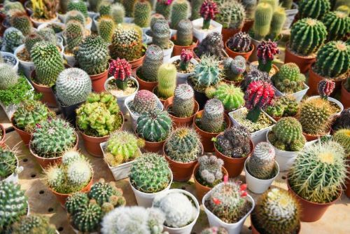
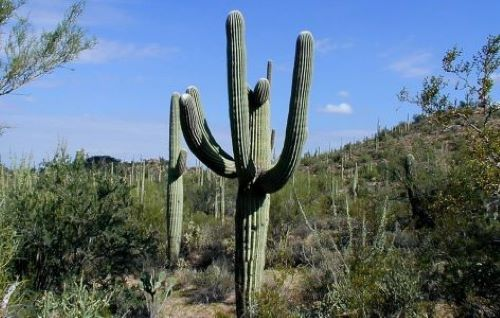

Popis

Kaktusy jsou vytrvalé rostliny s rozmanitým vzhledem.
Většina druhů má kulovitý až sloupovitý, nebo zploštělý a veliký stonek.
Stonek je na povrchu hrbolatý, žebernatý až křídlatý.
Většina druhů kaktusů je bezlistá a listy jsou přeměněny v trny.
Některé kaktusy mají stromovitý vzrůst a mohou dosáhnou výšky až 15 metrů.
Výskyt
Kaktusy pocházejí výhradně z Ameriky a vyskytují se od Kanady až po jižní část Jižní Ameriky.
Největší počet druhů se vyskytuje v oblasti jihozápadu USA a severozápadu Mexika a také v jihoamerických Andách.
Rostou na mnoho různých oblastech od vyprahlých pouští až po tropické deštné lesy.
Největší počet je ovšem v suchých, polopouštních oblastech.
Zajímavosti

Kaktusy zahrnují asi 1900 druhů ve 127 rodech.
Největší květy osahují délky a šířky až 30 centimetrů.
Nejvyšší druhy sloupcovitých kaktusů mohou dosáhnout výšek až 20 metrů.
Nejmenší druh kaktusu dosahuje velikosti jen 12 mm.
Nejodolnějšími kaktusy vůči nízkým teplotám snášejí mráz až do -35 °C.